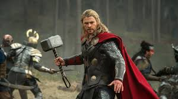

Dios del Trueno: Thor es uno de los dioses más poderosos de la mitología nórdica. Es el dios del trueno, las tormentas, la fuerza y la protección de la humanidad.
Familia: Padre: Odín, el dios principal de Asgard. Madre: Jord, la personificación de la Tierra. Esposa: Sif, conocida por su cabello dorado. Hijos: Modi, Magni y Thrud. Mjölnir: Su arma más icónica es el martillo Mjölnir, capaz de desatar rayos y regresar a su mano después de ser lanzado. Es un símbolo de poder y protección.
Carro tirado por cabras: Thor viaja en un carro tirado por dos cabras mágicas, Tanngrisnir y Tanngnjóstr, que puede sacrificar y resucitar después de comer.
Ragnarök: En el fin del mundo según la mitología nórdica, Thor lucha contra Jörmungandr, la serpiente de Midgard. Aunque mata a la serpiente, muere envenenado por su veneno.
Popularidad en la tradición escandinava: Fue uno de los dioses más venerados por los vikingos, y su símbolo (Mjölnir) era usado en amuletos para la protección.
Thor en la Cultura Popular (Marvel Comics y Películas) Aparición en Cómics: Creación: Introducido por Marvel Comics en Journey into Mystery #83 (1962), creado por Stan Lee, Larry Lieber y Jack Kirby. Historia: Thor es un superhéroe basado en la mitología nórdica. En los cómics, es enviado a la Tierra como castigo por su arrogancia para aprender humildad bajo la identidad de Donald Blake, un médico humano.
Poderes: Fuerza, velocidad y resistencia sobrehumanas. Control del trueno y los rayos a través de Mjölnir. Capacidad de volar y viajar entre dimensiones. Longevidad divina y resistencia a enfermedades. Películas del Universo Cinematográfico de Marvel (MCU): Interpretado por Chris Hemsworth. Debut en Thor (2011) y continuó apareciendo en películas como The Avengers (2012), Thor: Ragnarok (2017) y Avengers: Endgame (2019). Evolución: Inicialmente serio, Thor se volvió más humorístico en Thor: Ragnarok bajo la dirección de Taika Waititi. Destacado por su lucha en Avengers: Infinity War y Endgame, donde empuña tanto Mjölnir como Stormbreaker. Stormbreaker: Una poderosa arma introducida en el MCU que combina un hacha y un martillo, forjada para enfrentar a Thanos.
Personalidad: En los cómics y películas, Thor combina atributos heroicos, humor y una profunda conexión emocional con su familia y amigos, como Loki (su hermano adoptivo) y Jane Foster. Thor en la Actualidad Símbolo cultural: El martillo de Thor, Mjölnir, es un símbolo de fuerza y protección ampliamente usado en joyería, tatuajes y cultura pop. Es un puente entre la mitología antigua y la narrativa moderna. En videojuegos y literatura: Thor es un personaje recurrente en videojuegos como God of War: Ragnarök y numerosas novelas basadas en mitología.
